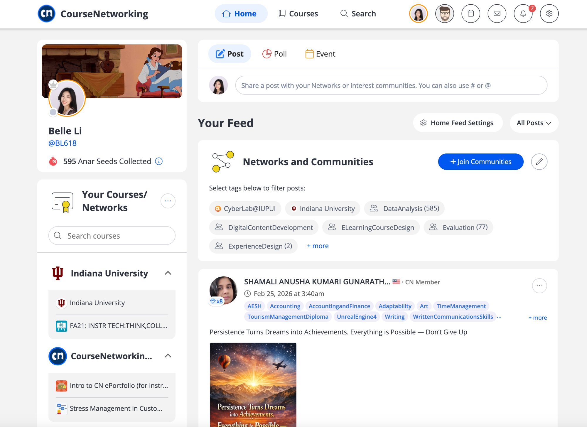
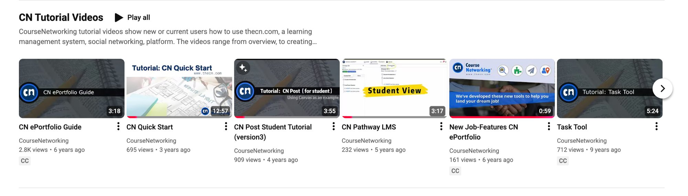

Product / Training Operations · Cyber Lab @ IUPUI
Cyber Lab: Product Adoption Training for CourseNetworking
Used user research and platform activity analysis to identify where new users got stuck in CourseNetworking, then built a suite of tutorial and walkthrough videos to reduce friction at the highest-impact points in the adoption journey.
Context
A social LMS with a feature adoption problem
CourseNetworking (CN) is a social learning management system that combines LMS features (courses, assignments, assessments) with community-style social features (posts, networks, ePortfolio). Cyber Lab @ IUPUI worked to support adoption of the platform across faculty and students at Indiana University.
The platform had released new features — including Pathway LMS, ePortfolio tools, and task management — but adoption was lagging. Users were signing up and then stalling before they could extract value from the platform.

CourseNetworking: social learning interface combining LMS courses with community feeds, ePortfolio, and interest-based networks — the product users were being trained to adopt.
Problem
A wide gap between sign-up and active use
The gap between "user signed up" and "user is actively using the platform" was wide. New users faced an unfamiliar interface with features that didn't behave like standard LMS tools — the social/community layer was novel, and features like ePortfolio and Pathways had no obvious analogue in Canvas or Blackboard.
Without targeted support at the moments of friction, users were abandoning the platform or falling back to asking instructors for help repeatedly. The existing documentation wasn't doing enough.
Research Process
Finding the friction before building the fix
Competitor analysis
Examined how comparable platforms (Canvas, Blackboard, Schoology) handled user onboarding and feature introduction. Identified patterns CN was missing — particularly quick-start guides and contextual help at the feature level.
Client interviews
Interviewed instructors and CN platform stakeholders to understand which features they most wanted users to adopt and where they saw the most confusion in their own students and colleagues.
User activity analysis
Analyzed platform activity data to identify where users were dropping off — which pages they landed on, what they never clicked, and which features had low activation rates relative to enrollment. This converted anecdotal friction into a prioritized list of intervention points.
Friction mapping
Synthesized research into a map of high-friction tasks in the adoption journey — specific moments where users stalled, made errors, or gave up. This became the brief for tutorial content: each video was tied to a specific friction point, not produced speculatively.
Deliverables
A tutorial suite built from research, not guesswork
Based on the friction map, I produced a suite of tutorial and walkthrough videos targeting the highest-impact adoption moments. Videos were published on the CourseNetworking YouTube channel for open access.

Published CN Tutorial Videos on YouTube: ePortfolio Guide, Quick Start, CN Post Student Tutorial, Pathway LMS, New Job-Features ePortfolio, and Task Tool — each targeting a specific friction point identified through research.
CN ePortfolio Guide (3:18)
Orienting new users to the ePortfolio feature — high-value but least-understood
CN Quick Start (12:57)
End-to-end onboarding walkthrough covering platform setup and first actions
CN Post — Student Tutorial (3:55)
Targeted tutorial for students on the social post feature, a common early confusion point
CN Pathway LMS (3:17)
Walkthrough of the Pathway feature — a structured course progression tool distinct from standard LMS flows
New Job-Features ePortfolio (0:59)
Short-form feature announcement for new job-related ePortfolio tools
Task Tool (5:24)
Tutorial for CN task management — high-friction for users coming from other task systems
Design Decisions
Why this approach
Research before production
Rather than producing tutorials speculatively, activity data and interviews identified which features were high-activation targets and where users were specifically getting stuck. Each video has a clear friction point it was designed to resolve.
Short-form, task-focused format
Videos range from under a minute to just over 12 minutes, most under 4 minutes. Users seeking help don't want to watch a full product tour; they want to complete a specific action and move on.
Student and instructor targeting separately
The CN Post tutorial was designed specifically for students, recognizing that student-facing friction was different from faculty-facing confusion. Separate audiences required separate assets.
A replicable pattern, not a one-time batch
The research → friction mapping → targeted asset workflow created a model applicable to any future CN feature release — not just a single set of tutorials.
Impact
Targeted help at the moments that matter
The tutorial suite addressed specific high-friction points identified through research, giving users targeted help at the moments they were most likely to abandon the platform. Videos published openly on YouTube extended reach beyond the immediate IUPUI user base.
The most significant lasting contribution was the process itself: a replicable method for turning platform activity data and user interviews into a prioritized tutorial production brief — applicable to any future feature release.